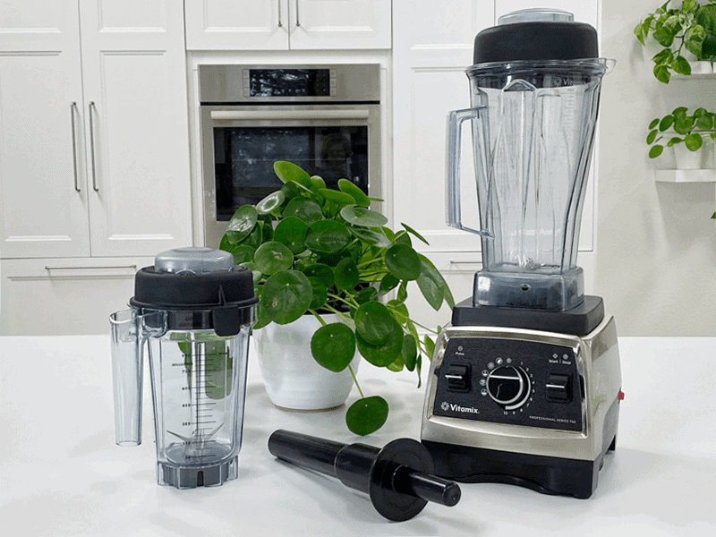

# 1 Blenders – Why and What I Recommend
A blender is one of the most important appliances you can own as a raw vegan. It is a tool that you are going to be using on a regular basis, and this means that the higher the quality tool you have, the better results you will achieve. They are great for creating sauces, soups, nut milks, blended beverages, dips, and so forth.

Before purchasing my first Vitamix, I bought many (!) low-end blenders. I ended up spending more money in the long run because they always broke down, leaked, or didn’t perform to the standards that I needed. So while they may be a bit of an investment in the beginning, you will be saving money in the long run. Let’s go over the main points as to why I recommend a high-powered blender.
Better Quality Nutrients
High-quality blenders come with high-quality motors. You can blend your ingredients for a shorter period of time while you create a smooth texture. With a rapid blending time, there will be less friction, which means that less air and heat will be introduced into your foods. Lower quality blenders take longer to create a smooth texture, and this means that as your food is being broken up, more air and heat will be introduced into your food.
Did you know that blended foods are primed for predigestion, allowing for better absorption of nutrients? But just because the food is blended doesn’t mean that you shouldn’t still chew — the act of chewing signals the stomach to begin preparing gastric juices for its role in digestion.
Better Flavor
Using a high-powered blender means that the flavors of the foods you are blending are going to be more fully melded together as the motor and strength of the blades come together to pulverize every ingredient. For instance, take the same smoothie ingredients and put them in a lower-powered blender, and then put the same ingredients in a higher-powered blender. With a lower-powered blender, you will be pouring a broken up salad into your glass… try choking that puppy down. With the higher-powered blender, you will be pouring a smooth, creamy, better-blended smoothie into the glass. Would you prefer to chew or slurp your smoothie?
Better Texture
A high-speed blender will yield fully emulsified soups and sauces, smooth smoothies, thick, delicious puddings and can even grind grains, nuts, and seeds into flours. Lumps and bumps are not usually sought after in such blended foods.
Create Your Own Flours
With the increasing prevalence of gluten-free diets, many people are using high-powered blenders to make gluten-free flours. If you plan on doing more than just occasional grain/nut/seed grinding, or if you want the absolute finest flour texture achievable, be sure to purchase the Dry Grains Container. It will produce a slightly finer texture than that produced by the standard container. However, for occasional grinding jobs, the standard container will work well enough.
Creating and Heating Soups
A blender isn’t something that most people consider when wanting to create quick, easy, and healthy soups. In a high-powered blender, you can turn room temperature ingredients into steaming hot soup in just a few minutes. To keep them raw, wrap your hand around the base while it blends, when warm to the touch, stop blending, and test.
Warranties
- High-quality powered blenders come with warranties. These machines are built to last.
- The industry standard for a warranty on a high-powered blender is seven to ten years. Such warranties usually cover everything but wear and tear and user damage. A standard blender usually has a warranty of one year or less.
- Always check with the manufacturer before purchasing the machine.
What I use in the Kitchen
I own the following blenders. If I had to pick just one, it would either be the Vitamix 750 or 5200 (with tamper). If you are on a tight budget, the Vitamix 5200 or the Blendtec would be a good option. I use the Vitamix Vita-Prep for our food manufacturing company.
Let’s Go Shopping
My Recommendations: (prices subject to change)
Mid-Range Blender
Nouveauraw.com is a participant in the Amazon Services LLC Associates Program, an affiliate advertising program designed to provide a means for us to earn fees by linking to Amazon.com and affiliated sites – at no extra cost to you.
Thank you for your support! amie sue
© AmieSue.com